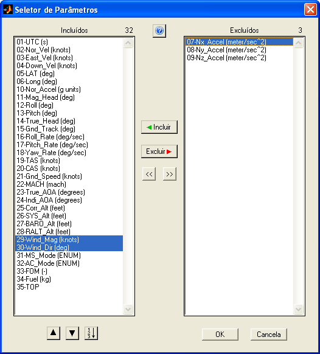
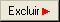
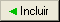
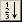

| Menu Ferramentas |
|
Essa ferramenta permite que o usuário manipule a lista de parâmetros das matrizes de trabalho. Com ela é possível definir a lista de parâmetros a serem mantidos e a lista de parâmetros a serem excluídos, e ordenar os parâmetros desejados conforme a necessidade.
Essa ferramenta também é utilizada para seleção dos parâmetros para incorporação de arquivo mat e obtenção de tabela de dados dos pontos de ensaio e tabela de dados dos eventos.
Para acessar o
Seletor de
Parâmetros, clique em “Ferramentas ► Seletor de
parâmetros” ou no botão  na
Barra de Ferramentas.
na
Barra de Ferramentas.

Descrição
A janela do
Seletor de Parâmetros
possui duas listas:
- Incluídos: Lista dos parâmetros a
serem mantidos;
- Excluídos: Lista dos parâmetros a
serem removidos das matrizes
de trabalho.
Operação
Para mover
parâmetros para a lista de excluídos:
- Selecione os parâmetros indesejados da primeira lista (é
possível
selecionar múltiplos parâmetros usando o mouse e os botões “Shift”
e “Ctrl” do teclado);
- Clique no botão 
Para retornar
parâmetros para a lista de incluídos:
- Selecione os parâmetros desejados da segunda lista (é
possível
selecionar múltiplos parâmetros usando o mouse e os botões “Shift”
e “Ctrl” do teclado);
- Clique no botão 
Para mover
todos os
parâmetros para a lista de incluídos ou excluídos:
- Clique no botão ou .
Para alterar a
ordem dos parâmetros a serem mantidos:
- Selecione um único parâmetro ou um grupo de parâmetros
na primeira lista;
- Use os botões ou
para
mover o parâmetro ou o grupo para cima ou para baixo.
Para reordenar
os parâmetros a serem mantidos:
- Clique no botão 
Sair
Para confirmar
a seleção de
parâmetros realizada, clique no botão “OK” e confirme. Os parâmetros da
segunda
lista serão excluídos das matrizes de trabalho e os parâmetros da
primeira
lista serão reordenados, caso aplicável. Não é possível excluir todos
os parâmetros.
Para descartar
a operação sem
alterações, clique no botão “Cancela”.
| |
Menu Ferramentas |
Editor de nomes
de parâmetros |
 |